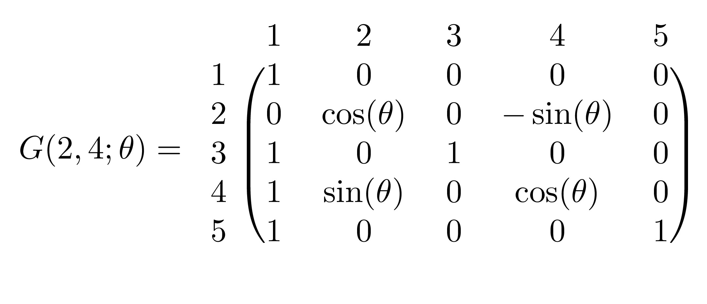
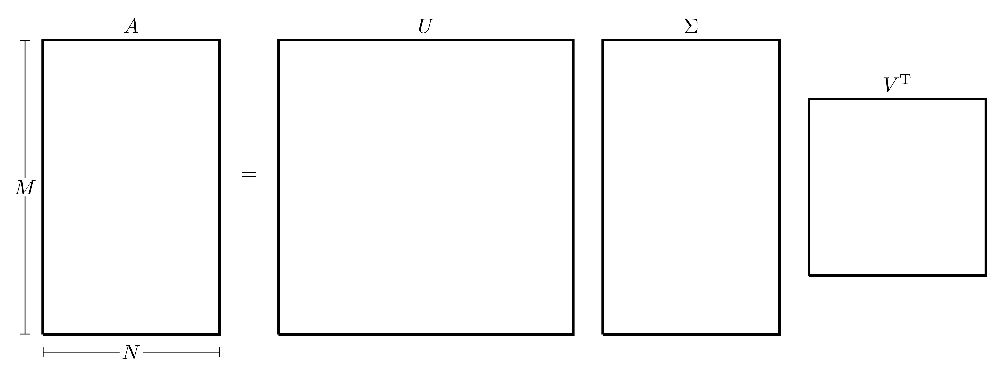

Appendix G — Matrix Decompositions
Consider the linear system \[A \boldsymbol{x} = \boldsymbol{b} \quad \text{where} \quad A \in \mathbb{R}^{N \times N}, \quad \boldsymbol{x} \in \mathbb{R}^N, \quad \boldsymbol{b} \in \mathbb{R}^N.\] In real-life situations, the matrix \(A\) does not always have a form that lends itself to being easily solvable (like a diagonal, triangular, sparse, etc.). However, there are ways in which a matrix can be broken down into several matrices, each of which can be dealt with separately and reducing computational time.
G.1 LU Factorisation
Returning to the Gaussian elimination procedure outlined in Appendix F, in order to convert the linear system \(A\boldsymbol{x}=\boldsymbol{b}\) into the upper triangular matrix system \(U\boldsymbol{x}=\boldsymbol{g}\), a series of transformations had to be done, each represented by a matrix \(M^{(n)}\) giving the form \[U=MA \quad \text{where} \quad M=M^{(N-1)} M^{(N-2)} \dots M^{(1)}.\] For every \(n=1,2,\dots,N-1\), the matrix \(M^{(n)}\) is lower triangular which means that the product of all these matrices \(M\) must also be lower triangular. Note that since \(M^{(n)}\) and \(M\) are both non-singular and lower triangular, then their inverses must also be lower triangular.
This means that the matrix \(A\) can be written as \(A=LU\) where \(L=M^{-1}\) is a lower triangular matrix and \(U\) is an upper triangular matrix. In fact \(U\) is the end result of the Gaussian elimination, while \(L\) has ones on the diagonal and the multipliers below the diagonal. This method is called the LU Decomposition of \(A\).
In the cases when there might be pivoting issues (which is when the pivot points might be equal to 0 during the Gaussian Elimination), the LU decomposition will more precisely be the PLU Decomposition (or the LU Decomposition with Partial Pivoting) where the method will produce an additional permutation matrix \(P\) where \(PA=LU\). This matrix \(P\) will swap rows when needed in order to have non-zero pivot points and is in fact orthogonal (i.e. \(P^{-1}={P}^{\mathrm{T}}\)).
The LU decomposition can be used to solve the linear system \(A\boldsymbol{x}=\boldsymbol{b}\) by splitting the matrix \(A\) into two matrices with more manageable forms. Indeed, since \(A=LU\), then the system becomes \(LU\boldsymbol{x}=\boldsymbol{b}\), this can be solved as follows:
- Solve the lower triangular system \(L\boldsymbol{y}=\boldsymbol{b}\) for \(\boldsymbol{y}\) using forward substitution;
- Solve the upper triangular \(U\boldsymbol{x}=\boldsymbol{y}\) for \(\boldsymbol{x}\) using backwards substitution.
This is a much better way of solving the system since both equations involve a triangular matrix and this requires \(\mathcal{O}\left(N^2\right)\) computations (forward and backward substitutions), which is much cheaper computationally compared to the full Gaussian elimination.
The advantage of using the LU decomposition is that if problems of the form \(A \boldsymbol{x}_i=\boldsymbol{b}_i\) need to be solved with many different right hand sides \(\boldsymbol{b}_i\) and a fixed \(A\), then only one LU decomposition is needed, and the cost for solving the individual systems is only the repeated forward and back substitutions. Note that there are other strategies optimised for specific cases (i.e. symmetric positive definite matrices, banded matrices, tridiagonal matrices).
In MATLAB, the LU decomposition can be done by a simple lu command:
>> A=[5,0,1;1,2,1;2,1,1];
>> [L,U]=lu(A)
L =
1.0000 0 0
0.2000 1.0000 0
0.4000 0.5000 1.0000
U =
5.0000 0 1.0000
0 2.0000 0.8000
0 0 0.2000
>> L*U-A % Verify if LU is equal to A
ans =
0 0 0
0 0 0
0 0 0Note that if the output for L is not lower triangular, that means there are some pivoting issues that had to be overcome and L had to change to accommodate for that to maintain the fact that \(A=LU\). In this case, the PLU decomposition would be better suited to avoid that, this is done by adding one extra output to the lu command, in this case, \(A\) will actually be the product \(A={P}^{\mathrm{T}}LU\).
>>> A=[1,0,1;1,0,1;2,1,1];
>> [L,U]=lu(A)
L =
0.5000 1.0000 1.0000
0.5000 1.0000 0
1.0000 0 0
U =
2.0000 1.0000 1.0000
0 -0.5000 0.5000
0 0 0
>> L*U-A % Verify if LU is equal to A even though
% L is not lower triangular
ans =
0 0 0
0 0 0
0 0 0
>> [L,U,P]=lu(A)
L =
1.0000 0 0
0.5000 1.0000 0
0.5000 1.0000 1.0000
U =
2.0000 1.0000 1.0000
0 -0.5000 0.5000
0 0 0
P =
0 0 1
0 1 0
1 0 0
>> L*U-A % Verify if P'LU is equal to A
ans =
0 0 0
0 0 0
0 0 0G.2 Orthogonality & QR Factorisation
Intuitively, the concept of orthogonality is crucial for defining the “amount of information” in a set of vectors; although this is also associated with the concept of linear independence, the “most informative” linearly independent vectors are those that are also orthogonal.
Recall that for a set of vectors \(\boldsymbol{q}_1, \boldsymbol{q}_2, \dots, \boldsymbol{q}_M \in \mathbb{R}^N\) where \(M \leq N\), the vectors are Orthogonal if \(\langle \boldsymbol{q}_m,\boldsymbol{q}_n \rangle=0\) for all \(m \neq n\). The set of vectors is called Orthonormal if \[\langle \boldsymbol{q}_m,\boldsymbol{q}_n \rangle=\delta_{mn}=\begin{cases} 0 & \text{if} \quad m \neq n \\ 1 & \text{if} \quad m=n. \end{cases}\] If \(N=M\), then the vectors form a linearly independent basis of \(\mathbb{R}^N\).
A square matrix \(Q\) is called Orthogonal if all its columns are orthonormal to one another. Some of the properties of orthogonal matrices are:
- An orthogonal matrix \(Q\) satisfies \(Q^{-1}={Q}^{\mathrm{T}}\), therefore \({Q}^{\mathrm{T}}Q=Q{Q}^{\mathrm{T}}=\mathcal{I}\);
- The determinant of an orthogonal matrix is \(1\) or \(-1\);
- The product of two orthogonal matrices is orthogonal.
- Given a matrix \(Q_1\in\mathbb{R}^{M\times K}\) with \(K < M\) and with orthonormal columns, there exists a matrix \(Q_2\in\mathbb{R}^{M\times (M-K)}\) such that \(Q = [Q_1, Q_2]\) is orthogonal. In other words, for a “tall” rectangular matrix with orthonormal columns, there exist a set of vectors that can be concatenated with the matrix to form an orthogonal square matrix.
- Orthogonal matrices preserve the 2-norm of vectors and matrices. In other words, if \(Q\in\mathbb{R}^{N\times N}\) is an orthogonal matrix, then for every \(\boldsymbol{x}\in\mathbb{R}^{N}\) and \(A\in\mathbb{R}^{N\times M}\): \[\|Q\boldsymbol{x}\|_2 = \|\boldsymbol{x}\|_2 \quad ; \quad \|QA\|_2 = \|A\|_2.\]
There are two particularly relevant classes of orthogonal matrices:
The Householder Reflection Matrix (named after Alston Scott Householder) is a reflection matrix on a plane that contains the origin. The reflection matrix is given by \[P = \mathcal{I}- 2\boldsymbol{v}{\boldsymbol{v}}^{\mathrm{T}}\] where \(\boldsymbol{v}\) is the unit vector that is normal to the hyperplane in which the reflection has been performed. The matrix \(P\) is in fact symmetric and orthogonal (i.e. \(P^{-1}={P}^{\mathrm{T}}=P\)). Reflection transformations appear in many numerical linear algebra algorithms and their main use is to transform a vector \(\boldsymbol{x} \in \mathbb{R}^N\) to another vector \(\boldsymbol{y} \in \mathbb{R}^N\) with the same magnitude (meaning that for given vectors \(\boldsymbol{x},\boldsymbol{y} \in \mathbb{R}^N\) with \(\| \boldsymbol{x} \|_2=\| \boldsymbol{y} \|_2\), there exists a reflection matrix \(P\) such that \(P\boldsymbol{x}=\boldsymbol{y}\)).
The Givens Rotation Matrix (named after James Wallace Givens) represents a rotation in the plane that can be spanned by two vectors. The matrix of transformation is denoted \(G(i,j;\theta)\) where the vector \(G(i,j;\theta)\boldsymbol{x}\) is simply the vector \(\boldsymbol{x}\) rotated \(\theta\) radians anti-clockwise on a plane that is parallel to the \((i,j)\)-plane. The matrix \(G(i,j;\theta)\) is essentially an identity matrix with the \((i,i)\) and \((j,j)\) terms replaced by \(\cos(\theta)\), the \((i,j)\) term replaced by \(\sin(\theta)\) and the \((j,i)\) term replaced by \(-\sin(\theta)\). For example, in \(\mathbb{R}^5\), the matrix \(G(2,4;\theta)\) is 
Since both reflection and rotation matrices are orthogonal matrix transformations, a sequence of reflections and rotations can be represented by the matrix \({Q}^{\mathrm{T}}\) (which would also be orthogonal). To this end, any matrix \(A \in \mathbb{R}^{M\times N}\) with \(M \geq N\) can be transformed by \({Q}^{\mathrm{T}} \in \mathbb{R}^{M \times M}\) to give a block matrix with an upper triangular matrix occupying the first \(N\) rows with \(M-N\) zero rows below it, i.e. \[{Q}^{\mathrm{T}}A= \left[ \begin{matrix} R_1 \\ 0 \end{matrix} \right]\] where \(R_1 \in \mathbb{R}^{N\times N}\) is an upper triangular square matrix. Equivalently, \(A\) can be written as \(A=QR\) where \(Q\) is the orthogonal transformation matrix and \(R\) is a block rectangular matrix consisting of a square lower triangular matrix and a block zero matrix. This type of decomposition is called the QR Factorisation. The full QR factorisation can be visually represented as follows:
There is a much more concise form of the QR factorisation where only the first several columns of \(Q\) are considered since the rest will be multiplied by 0 anyway, this gives an “economy version” of the QR factorisation written as \(A=Q_1R_1\) which be visually represented as follows:
The QR decomposition of a matrix can be performed on any matrix (square or rectangular). The following sections will show how this can be done using reflections and rotations.
G.2.1 QR Decomposition Using Reflections
The following will explain how the QR decomposition can be performed using reflection matrices on a square matrix \(A \in \mathbb{R}^{N \times N}\). Denote the \({n}^{\mathrm{th}}\) column of the matrix \(A\) by \(\boldsymbol{a}_n\), this means \(A\) can be written as \[A=\begin{pmatrix} \vdots & \vdots & & \vdots \\ \boldsymbol{a}_1 & \boldsymbol{a}_2 & \dots & \boldsymbol{a}_N \\ \vdots & \vdots & & \vdots \end{pmatrix}.\] The vector \(\boldsymbol{\mathrm{e}}_n\) will denote the \({n}^{\mathrm{th}}\) canonical basis vector, i.e. the vector with all its entries being equal to 0 except the element in location \(n\) which is equal to 1.
This process will also be applied in parallel to the following matrix \[A=\begin{pmatrix} -1 & 1 & 1 \\ 1 & 1 & -1 \\ 1 & 1 & 1 \end{pmatrix}.\] In this case, \[\boldsymbol{a}_1=\begin{pmatrix} -1 \\ 1 \\ 1 \end{pmatrix}, \quad \boldsymbol{a}_2=\begin{pmatrix} 1 \\ 1 \\ 1 \end{pmatrix} \quad \text{and} \quad \boldsymbol{a}_3=\begin{pmatrix} 1 \\ -1 \\ 1 \end{pmatrix}.\]
First, find a reflection matrix that transforms the first column of \(A\) into \({(\alpha, 0, \dots, 0)}^{\mathrm{T}}\) where \(\alpha=\|\boldsymbol{a}_1\|_2\). Let \(\boldsymbol{u}=\boldsymbol{a}_1-\alpha \boldsymbol{\mathrm{e}}_1\) and \(\boldsymbol{v}=\frac{\boldsymbol{u}}{\| \boldsymbol{u} \|_2}\), then the first reflection matrix is \[P_1=\mathcal{I}-2\boldsymbol{v} {\boldsymbol{v}}^{\mathrm{T}}.\] This can be verified by checking that all the terms in the first column of the matrix \(A_2=P_1 A\) are zero except for the first term.
The 2-norm of the first column of \(A\) is \(\alpha=\sqrt{3}\), then \[\boldsymbol{u}=\boldsymbol{a}_1-\alpha \boldsymbol{\mathrm{e}}_1=\begin{pmatrix} -1 \\ 1 \\ 1 \end{pmatrix}-\sqrt{3}\begin{pmatrix} 1 \\ 0 \\ 0 \end{pmatrix}=\begin{pmatrix} -1-\sqrt{3} \\ 1 \\ 1 \end{pmatrix}\] \[\boldsymbol{v}=\frac{\boldsymbol{u}}{\| \boldsymbol{u} \|}=\frac{1}{\sqrt{6+2\sqrt{3}}}\begin{pmatrix} -1-\sqrt{3} \\ 1 \\ 1 \end{pmatrix}.\] \[P_1=\mathcal{I}-2\boldsymbol{v} {\boldsymbol{v}}^{\mathrm{T}}=\begin{pmatrix} 1 & 0 & 0 \\ 0 & 1 & 0 \\ 0 & 0 & 1 \end{pmatrix}-\frac{2}{6+2\sqrt{3}}\begin{pmatrix} -1-\sqrt{3} \\ 1 \\ 1 \end{pmatrix}\begin{pmatrix} -1-\sqrt{3} & 1 & 1 \end{pmatrix}\] \[=\begin{pmatrix} 1 & 0 & 0 \\ 0 & 1 & 0 \\ 0 & 0 & 1 \end{pmatrix}-\frac{1}{3+\sqrt{3}}\begin{pmatrix} 4+2\sqrt{3} & -1-\sqrt{3} & -1-\sqrt{3} \\ -1-\sqrt{3} & 1 & 1 \\ -1-\sqrt{3} & 1 & 1 \end{pmatrix}\] \[=\frac{1}{3+\sqrt{3}}\begin{pmatrix} -1-\sqrt{3} & 1+\sqrt{3} & 1+\sqrt{3} \\ 1+\sqrt{3} & 2+\sqrt{3} & -1 \\ 1+\sqrt{3} & -1 & 2+\sqrt{3} \end{pmatrix}\]
The matrix \(P_1\) can be simplified to give \[P_1=\frac{1}{6}\begin{pmatrix} -2\sqrt{3} & 2\sqrt{3} & 2\sqrt{3} \\ 2\sqrt{3} & 3+\sqrt{3} & -3+\sqrt{3} \\ 2\sqrt{3} & -3+\sqrt{3} & 3+\sqrt{3} \end{pmatrix}\]
To verify that this matrix is valid, consider the product \(A_2=P_1 A\): \[A_2=P_1 A=\frac{1}{6}\begin{pmatrix} -2\sqrt{3} & 2\sqrt{3} & 2\sqrt{3} \\ 2\sqrt{3} & 3+\sqrt{3} & -3+\sqrt{3} \\ 2\sqrt{3} & -3+\sqrt{3} & 3+\sqrt{3} \end{pmatrix}=\begin{pmatrix} -1 & 1 & 1 \\ 1 & 1 & -1 \\ 1 & 1 & 1 \end{pmatrix}\] \[=\frac{1}{3}\begin{pmatrix} 3\sqrt{3} & \sqrt{3} & -\sqrt{3} \\ 0 & 2\sqrt{3} & -3+\sqrt{3} \\ 0 & 2\sqrt{3} & 3+\sqrt{3} \end{pmatrix},\] indeed, all the terms in the first column are 0 except for the first.
Repeat the same process for the \((N-1) \times (N-1)\) bottom right submatrix of \(A_2\) then once the new matrix \(P_2\) is obtained (of size \((N-1)\times(N-1)\)), place it at the bottom right of the \(N \times N\) identity. When this process is repeated a total of \(N-1\) times, the result will be an upper triangular matrix.
Consider the matrix \[A_2=\frac{1}{3}\begin{pmatrix} 3\sqrt{3} & \sqrt{3} & -\sqrt{3} \\ 0 & 2\sqrt{3} & -3+\sqrt{3} \\ 0 & 2\sqrt{3} & 3+\sqrt{3} \end{pmatrix}.\] Let \(B\) be the bottom right \(2 \times 2\) submatrix of \(A_2\),
Repeat the same process as before with the matrix \(B\): The 2-norm of the first column of \(B\) is \(\beta=\frac{2\sqrt{6}}{3}\). Then \[\boldsymbol{u}=\boldsymbol{b}_1-\beta \boldsymbol{\mathrm{e}}_1=\begin{pmatrix} \frac{2\sqrt{3}}{3} \\ \frac{2\sqrt{3}}{3} \end{pmatrix}-\frac{2\sqrt{6}}{3}\begin{pmatrix} 1 \\ 0 \end{pmatrix}=\frac{2\sqrt{3}}{3}\begin{pmatrix} 1-\sqrt{2} \\ 1 \end{pmatrix}\] \[\boldsymbol{v}=\frac{\boldsymbol{u}}{\| \boldsymbol{u} \|}=\frac{1}{\sqrt{4-2\sqrt{2}}}\begin{pmatrix} 1-\sqrt{2} \\ 1 \end{pmatrix}\] \[\tilde{P}_2=\mathcal{I}-2\boldsymbol{v}{\boldsymbol{v}}^{\mathrm{T}}=\begin{pmatrix} 1 & 0 \\ 0 & 1 \end{pmatrix}-\frac{2}{4-2\sqrt{2}}\begin{pmatrix} 1-\sqrt{2} \\ 1 \end{pmatrix} \begin{pmatrix} 1-\sqrt{2} & 1 \end{pmatrix}\] \[=\begin{pmatrix} 1 & 0 \\ 0 & 1 \end{pmatrix}-\frac{1}{2-\sqrt{2}}\begin{pmatrix} 3-2\sqrt{2} & 1-\sqrt{2} \\ 1-\sqrt{2} & 1 \end{pmatrix}=\begin{pmatrix} \frac{\sqrt{2}}{2} & \frac{\sqrt{2}}{2} \\ \frac{\sqrt{2}}{2} & -\frac{\sqrt{2}}{2} \end{pmatrix}.\]
Consider the product \(\tilde{P}_2 B\): \[\tilde{P}_2 B=\begin{pmatrix} \frac{\sqrt{2}}{2} & \frac{\sqrt{2}}{2} \\ \frac{\sqrt{2}}{2} & -\frac{\sqrt{2}}{2} \end{pmatrix}\begin{pmatrix} \frac{2\sqrt{3}}{3} & \frac{-3+\sqrt{3}}{3} \\ \frac{2\sqrt{3}}{3} & \frac{3+\sqrt{3}}{3} \end{pmatrix}=\begin{pmatrix} \frac{2\sqrt{6}}{3} & \frac{\sqrt{6}}{3} \\ 0 & 1 \end{pmatrix}\] which does change the matrix \(B\) into upper triangular form.
Let the matrix \(P_2\) be the identity matrix with the bottom \(2 \times 2\) submatrix replaced with \(\tilde{P}_2\), i.e. \[P_2=\begin{pmatrix} 1 & 0 & 0 \\ 0 & \frac{\sqrt{2}}{2} & \frac{\sqrt{2}}{2} \\ 0 & \frac{\sqrt{2}}{2} & -\frac{\sqrt{2}}{2} \end{pmatrix}=\frac{1}{2}\begin{pmatrix} 2 & 0 & 0 \\ 0 & \sqrt{2} & \sqrt{2} \\ 0 & \sqrt{2} & -\sqrt{2} \end{pmatrix}.\]
The product \(P_2 A_2\) should be lower triangular, indeed \[P_2 A_2=\frac{1}{6}\begin{pmatrix} 2 & 0 & 0 \\ 0 & \sqrt{2} & \sqrt{2} \\ 0 & \sqrt{2} & -\sqrt{2} \end{pmatrix}\begin{pmatrix} 3\sqrt{3} & \sqrt{3} & -\sqrt{3} \\ 0 & 2\sqrt{3} & -3+\sqrt{3} \\ 0 & 2\sqrt{3} & 3+\sqrt{3} \end{pmatrix}=\frac{1}{6}\begin{pmatrix} 6\sqrt{3} & 2\sqrt{3} & -2\sqrt{3} \\ 0 & 4\sqrt{6} & 2\sqrt{6} \\ 0 & 0 & -6\sqrt{2} \end{pmatrix}.\]
This sequence of steps will generate \(N-1\) reflection matrices denoted \(P_1, P_2, \dots P_{N-1}\) which when applied to \(A\) in reverse order (i.e. the product is \(P_{N-1} \dots P_2 P_1 A\)), must give an upper triangular matrix \(R\). Since \(P_n\) are orthogonal for all \(n=1,2,\dots,N-1\), then their product will also be orthogonal.
Let \(P=P_{N-1} \dots P_2 P_1\), then \(R=PA\) meaning that \(A=P^{-1}R\). Since \(P\) is orthogonal, then \(P^{-1}={P}^{\mathrm{T}}\) which will be equal to \(Q\) in the QR factorisation.
The matrices in question are \[P_1=\frac{1}{6}\begin{pmatrix} -2\sqrt{3} & 2\sqrt{3} & 2\sqrt{3} \\ 2\sqrt{3} & 3+\sqrt{3} & -3+\sqrt{3} \\ 2\sqrt{3} & -3+\sqrt{3} & 3+\sqrt{3} \end{pmatrix}, \quad P_2=\frac{1}{2}\begin{pmatrix} 2 & 0 & 0 \\ 0 & \sqrt{2} & \sqrt{2} \\ 0 & \sqrt{2} & -\sqrt{2} \end{pmatrix}\] The matrix product \(P_2 P_1 A\) should give the matrix \(R\) which is upper triangular, indeed \[R=P_2 P_1 A=\frac{1}{6}\begin{pmatrix} 6\sqrt{3} & 2\sqrt{3} & -2\sqrt{3} \\ 0 & 4\sqrt{6} & 2\sqrt{6} \\ 0 & 0 & -6\sqrt{2} \end{pmatrix}.\]
Let \[P=P_2 P_1=\frac{1}{12}\begin{pmatrix} 2 & 0 & 0 \\ 0 & \sqrt{2} & \sqrt{2} \\ 0 & \sqrt{2} & -\sqrt{2} \end{pmatrix}\begin{pmatrix} -2\sqrt{3} & 2\sqrt{3} & 2\sqrt{3} \\ 2\sqrt{3} & 3+\sqrt{3} & -3+\sqrt{3} \\ 2\sqrt{3} & -3+\sqrt{3} & 3+\sqrt{3} \end{pmatrix}\] \[=\begin{pmatrix} -\frac{\sqrt{3}}{3} & \frac{\sqrt{3}}{3} & \frac{\sqrt{3}}{3} \\ \frac{\sqrt{6}}{3} & \frac{\sqrt{6}}{6} & \frac{\sqrt{6}}{6} \\ 0 & \frac{\sqrt{2}}{2} & -\frac{\sqrt{2}}{2} \end{pmatrix}.\] Therefore \[Q=P^{-1}={P}^{\mathrm{T}}=\begin{pmatrix} -\frac{\sqrt{3}}{3} & \frac{\sqrt{6}}{3} & 0 \\ \frac{\sqrt{3}}{3} & \frac{\sqrt{6}}{6} & \frac{\sqrt{2}}{2} \\ \frac{\sqrt{3}}{3} & \frac{\sqrt{6}}{6} & -\frac{\sqrt{2}}{2} \end{pmatrix},\] hence giving the QR decomposition of \(A\) as \[\underbrace{\begin{pmatrix} -1 & 1 & 1 \\ 1 & 1 & -1 \\ 1 & 1 & 1 \end{pmatrix}}_{A}=\underbrace{\begin{pmatrix} -\frac{\sqrt{3}}{3} & \frac{\sqrt{6}}{3} & 0 \\ \frac{\sqrt{3}}{3} & \frac{\sqrt{6}}{6} & \frac{\sqrt{2}}{2} \\ \frac{\sqrt{3}}{3} & \frac{\sqrt{6}}{6} & -\frac{\sqrt{2}}{2} \end{pmatrix}}_{Q} \underbrace{\begin{pmatrix} \sqrt{3} & \frac{\sqrt{3}}{3} & -\frac{\sqrt{3}}{3} \\ 0 & \frac{2\sqrt{6}}{3} & \frac{\sqrt{6}}{3} \\ 0 & 0 & -\sqrt{2} \end{pmatrix}}_{R}\]
G.2.2 QR Decomposition Using Rotations
The following will explain how the QR decomposition can be performed using rotation matrices on a square matrix \(A \in \mathbb{R}^{N \times N}\).
This process will also be applied in parallel to the following matrix \[A=\begin{pmatrix} -1 & 1 & 1 \\ 1 & 1 & -1 \\ 1 & 1 & 1 \end{pmatrix}.\]
The rotation matrices should make all the terms in the lower triangular part of the matrix equal to zero. Starting with the lower left most element \(a_{N1}\), this element can be eliminated by using the rotation matrix \(G(1,N;\theta)\) where \(\theta= \arctan \left( -\frac{a_{N1}}{a_{11}} \right)\). When applied to \(A\), this should eliminate the term \(a_{N1}\).
For the matrix \[A=\begin{pmatrix} -1 & 1 & 1 \\ 1 & 1 & -1 \\ 1 & 1 & 1 \end{pmatrix}.\] The angle \(\theta\) will be \(\theta=\arctan \left( -\frac{a_{31}}{a_{11}} \right)=\arctan \left( 1 \right)=\frac{\pi}{4}\). Therefore the rotation matrix will be \[G_1=G \left( 1,3;\frac{\pi}{4} \right)=\begin{pmatrix} \cos \left( \frac{\pi}{4} \right) & 0 & -\sin \left( \frac{\pi}{4} \right) \\ 0 & 1 & 0 \\ \sin \left( \frac{\pi}{4} \right) & 0 & \cos \left( \frac{\pi}{4} \right) \end{pmatrix}=\begin{pmatrix} \frac{\sqrt{2}}{2} & 0 & -\frac{\sqrt{2}}{2} \\ 0 & 1 & 0 \\ \frac{\sqrt{2}}{2} & 0 & \frac{\sqrt{2}}{2} \end{pmatrix}.\]
This can be verified by considering the product \(A_2=G_1A\): \[A_2=G_1 A=\begin{pmatrix} \frac{\sqrt{2}}{2} & 0 & \frac{\sqrt{2}}{2} \\ 0 & 1 & 0 \\ -\frac{\sqrt{2}}{2} & 0 & \frac{\sqrt{2}}{2} \end{pmatrix}\begin{pmatrix} -1 & 1 & 1 \\ 1 & 1 & -1 \\ 1 & 1 & 1 \end{pmatrix}=\begin{pmatrix} -\sqrt{2} & 0 & 0 \\ 1 & 1 & -1 \\ 0 & \sqrt{2} & \sqrt{2} \end{pmatrix}\] which does eliminate \(a_{31}\).
This process can be repeated for all other terms in the lower triangular section to reduce \(A\) into an upper triangular matrix. In these cases, to eliminate the element in position \((m,n)\), the angle \(\theta=\arctan\left( -\frac{a_{mn}}{a_{nn}} \right)\) and the rotation matrix is \(G(n,m;\theta)\).
Repeat the same process as above to the matrix \(A_2\) to eliminate the term in position (2,1): \(\theta_2=\arctan\left( -\frac{a_{21}}{a_{11}} \right)=\arctan \left( \frac{1}{\sqrt{2}} \right)\) and \(G_2=G(1,2;\theta_2)\) is \[G_2=G(1,2;\theta_2)=\begin{pmatrix} \cos(\theta_2) & -\sin(\theta_2) & 0 \\ \sin(\theta_2) & \cos(\theta_2) & 0 \\ 0 & 0 & 1 \end{pmatrix}=\begin{pmatrix} \frac{\sqrt{6}}{3} & -\frac{\sqrt{3}}{3} & 0 \\ \frac{\sqrt{3}}{3} & \frac{\sqrt{6}}{3} & 0 \\ 0 & 0 & 1 \end{pmatrix}.\] Applying \(G_2\) to \(A_2\) should eliminate the (2,1) element, indeed \[A_3=G_2 A_2=\begin{pmatrix} -\sqrt{3} & -\frac{\sqrt{3}}{3} & \frac{\sqrt{3}}{3} \\ 0 & \frac{\sqrt{6}}{3} & -\frac{\sqrt{6}}{3} \\ 0 & \sqrt{2} & \sqrt{2} \end{pmatrix}.\]
Finally, the term in position (2,3) needs to be eliminated: \(\theta_3=\arctan\left( -\frac{a_{32}}{a_{22}} \right)=\arctan\left( \sqrt{3} \right)\) and \(G_3=G(2,3;\theta_3)\) is \[G_3=G(2,3;\theta_3)=\begin{pmatrix} 1 & 0 & 0 \\ 0 & \cos(\theta_3) & -\sin(\theta_3) \\ 0 & \sin(\theta_3) & \cos(\theta_3) \end{pmatrix}=\frac{1}{2}\begin{pmatrix} 1 & 0 & 0 \\ 0 & 1 & \sqrt{3} \\ 0 & -\sqrt{3} & 1 \end{pmatrix}.\]
Applying \(G_3\) to \(A_3\) should eliminate the (3,2) element, indeed \[G_3 A_3=\frac{1}{2}\begin{pmatrix} 1 & 0 & 0 \\ 0 & 1 & \sqrt{3} \\ 0 & -\sqrt{3} & 1 \end{pmatrix}\begin{pmatrix} -\sqrt{3} & -\frac{\sqrt{3}}{3} & \frac{\sqrt{3}}{3} \\ 0 & \frac{\sqrt{6}}{3} & -\frac{\sqrt{6}}{3} \\ 0 & \sqrt{2} & \sqrt{2} \end{pmatrix}=\frac{1}{3}\begin{pmatrix} -3\sqrt{3} & -\sqrt{3} & \sqrt{3} \\ 0 & 2\sqrt{6} & \sqrt{6} \\ 0 & 0 & 3\sqrt{2} \end{pmatrix}.\]
This process will generate a sequence of at most \(\frac{1}{2}N(N-1)\) rotation matrices (since this is the number of terms that need to be eliminated). Suppose that \(M\) rotation matrices are needed where \(M \in \left\{ 1,2,\dots,\frac{1}{2}N(N-1) \right\}\), then when these are applied to \(A\) in reverse order (the product \(G_M G_{M-1} \dots G_2 G_1 A\)), then the result should be the upper triangular matrix \(R\). Let \(G=G_M G_{M-1} \dots G_2 G_1\), then \(R=GA\). Since all the rotation matrices are orthogonal, then their product must also be orthogonal, therefore if \(Q=G^{-1}={G}^{\mathrm{T}}\), then \(A=QR\), hence giving the QR decomposition of \(A\).
The matrices in question are \[G_1=\begin{pmatrix} \frac{\sqrt{2}}{2} & 0 & \frac{\sqrt{2}}{2} \\ 0 & 1 & 0 \\ -\frac{\sqrt{2}}{2} & 0 & \frac{\sqrt{2}}{2} \end{pmatrix}, \quad G_2=\begin{pmatrix} \frac{\sqrt{6}}{3} & -\frac{\sqrt{3}}{3} & 0 \\ \frac{\sqrt{3}}{3} & \frac{\sqrt{6}}{3} & 0 \\ 0 & 0 & 1 \end{pmatrix} \quad \text{and} \quad G_3=\begin{pmatrix} 1 & 0 & 0 \\ 0 & \frac{1}{2} & \frac{\sqrt{3}}{2} \\ 0 & -\frac{\sqrt{3}}{2} & \frac{1}{2} \end{pmatrix}.\] The product of the rotation matrices is \[G=G_3 G_2 G_1 = \begin{pmatrix} \frac{\sqrt{3}}{3} & -\frac{\sqrt{3}}{3} & -\frac{\sqrt{3}}{3} \\ \frac{\sqrt{6}}{3} & \frac{\sqrt{6}}{6} & \frac{\sqrt{6}}{6} \\ 0 & \frac{\sqrt{2}}{2} & -\frac{\sqrt{2}}{2} \end{pmatrix}.\] Therefore \[Q=G^{-1}={G}^{\mathrm{T}}=\begin{pmatrix} \frac{\sqrt{3}}{3} & \frac{\sqrt{6}}{3} & 0 \\ -\frac{\sqrt{3}}{3} & \frac{\sqrt{6}}{6} & \frac{\sqrt{2}}{2} \\ \frac{-\sqrt{3}}{3} & \frac{\sqrt{6}}{6} & -\frac{\sqrt{2}}{2} \end{pmatrix}\] hence giving the QR decomposition of \(A\) as \[\underbrace{\begin{pmatrix} -1 & 1 & 1 \\ 1 & 1 & -1 \\ 1 & 1 & 1 \end{pmatrix}}_{A}=\underbrace{\begin{pmatrix} \frac{\sqrt{3}}{3} & \frac{\sqrt{6}}{3} & 0 \\ -\frac{\sqrt{3}}{3} & \frac{\sqrt{6}}{6} & \frac{\sqrt{2}}{2} \\ -\frac{\sqrt{3}}{3} & \frac{\sqrt{6}}{6} & -\frac{\sqrt{2}}{2} \end{pmatrix}}_{Q} \underbrace{\begin{pmatrix} -\sqrt{3} & -\frac{\sqrt{3}}{3} & \frac{\sqrt{3}}{3} \\ 0 & \frac{2\sqrt{6}}{3} & \frac{\sqrt{6}}{3} \\ 0 & 0 & \sqrt{2} \end{pmatrix}}_{R}.\]
Generally, the QR decomposition of a matrix is unique up to sign differences (as seen from the examples above where some of the rows and columns have different signs but in the end, the result will be the same).
G.2.3 QR Decomposition in MATLAB
In MATLAB, the QR decomposition can be done with the qr function.
>> A=[4,6,1;0,1,-1;0,1,2]
A =
4 6 1
0 1 -1
0 1 2
>> [Q,R]=qr(A)
Q =
1.0000 0 0
0 -0.7071 -0.7071
0 -0.7071 0.7071
R =
4.0000 6.0000 1.0000
0 -1.4142 -0.7071
0 0 2.1213If the matrix is rectangular, then the economy version of the QR decomposition can be found using qr(A,"econ").
G.3 Eigenvalue Decomposition
For a matrix \(A \in \mathbb{C}^{N \times N}\), the value \(\lambda \in \mathbb{C}\) and non-zero vector \(\boldsymbol{v} \in \mathbb{C}^N\) are known as the Eigenvalue and Eigenvector, respectively, if they satisfy the relationship \(A\boldsymbol{v}=\lambda \boldsymbol{v}\). These can be written in eigenpair notation as \(\left\{ \lambda; \boldsymbol{v} \right\}\).
In MATLAB, to find the eigenvalues and eigenvectors of a matrix A, use [V,E]=eig(A). This will produce a matrix V whose columns are the eigenvectors of A and a diagonal matrix E whose entries are the corresponding eigenvalues where the \((n,n)\) element of E is the eigenvalue that corresponds to the eigenvector in column \(n\) of V. However, if only eig(A) is run without specifying the outputs, MATLAB will produce a column vector of eigenvalues only.
>> A=[-2,-4,2;-2,1,2;4,2,5]
A =
-2 -4 2
-2 1 2
4 2 5
>> eig(A)
ans =
-5
3
6
>> [V,E]=eig(A)
v =
0.8165 0.5345 0.0584
0.4082 -0.8018 0.3505
-0.4082 -0.2672 0.9347
E =
-5 0 0
0 3 0
0 0 6Therefore, the matrix \(A\) has the following eigenpairs \[\left\{ -5 \; ; \; \begin{pmatrix} 0.8165 \\ 0.4082 \\ -0.4082 \end{pmatrix} \right\} \quad \text{,} \quad \left\{ 3 \; ; \; \begin{pmatrix} 0.5345 \\ -0.8018 \\ -0.2672 \end{pmatrix} \right\} \quad \text{,} \quad \left\{ 6 \; ; \; \begin{pmatrix} 0.0584 \\ 0.3505 \\ 0.9347 \end{pmatrix} \right\}.\]
Notice that the eigenvectors are not represented in the most pleasant form, the reason is that MATLAB normalises eigenvectors by default, meaning that the magnitude of every eigenvector is 1. In order to convert this to a more palatable form, the columns should be individually multiplied or divided by any scalar value1. The easiest way to do this is to, first of all, divide every individual column by its minimum value, then any other manipulations can be carried out afterwards.
>> v1=V(:,1)/min(V(:,1))
ans =
-2
-1
1
>> v2=V(:,2)/min(V(:,2))
ans =
-0.6667
1.0000
0.3333
>> v2=3*v2
ans =
-2
3
1
>> v3=V(:,3)/min(V(:,3))
ans =
1
6
16This produces a far more appealing set of eigenpairs: \[\left\{ -5 \; ; \; \begin{pmatrix} -2 \\ -1 \\ 1 \end{pmatrix} \right\} \quad \text{,} \quad \left\{ 3 \; ; \; \begin{pmatrix} -2 \\ 3 \\ 1 \end{pmatrix} \right\} \quad \text{,} \quad \left\{ 6 \; ; \; \begin{pmatrix} 1 \\ 6 \\ 16 \end{pmatrix} \right\}.\]
G.3.1 Eigendecomposition
Suppose that the matrix \(A \in \mathbb{C}^{N \times N}\) has \(N\) linearly independent eigenvectors \(\boldsymbol{v}_1, \boldsymbol{v}_2, \dots, \boldsymbol{v}_N\) with their associated eigenvalues \(\lambda_1, \lambda_2, \dots, \lambda_N\). Let \(V\) be the matrix whose columns are the eigenvectors of \(A\) and let \(\Lambda\) be the diagonal matrix whose entries are the corresponding eigenvalues (in the same way that MATLAB produces the matrices E and V). In other words, if the matrix \(A\) has the eigenpairs \[\left\{ \lambda_1; \boldsymbol{v}_1 \right\}, \quad \left\{ \lambda_2; \boldsymbol{v}_2 \right\}, \quad \dots \left\{ \lambda_N; \boldsymbol{v}_N \right\},\] then the matrices \(V\) and \(\Lambda\) are \[V=\begin{pmatrix} \vdots & \vdots & & \vdots \\ \boldsymbol{v}_1 & \boldsymbol{v}_2 & \dots & \boldsymbol{v}_N \\ \vdots & \vdots && \vdots \end{pmatrix} \quad \text{and} \quad \Lambda=\begin{pmatrix} \lambda_1 \\ & \lambda_2 \\ && \ddots \\ &&& \lambda_N \end{pmatrix}.\] The matrix \(A\) can then be written as \(A=V \Lambda V^{-1}\) and this is called the Eigendecomposition of \(A\). If \(V\) is an orthogonal matrix (as MATLAB produces it), then the eigendecomposition of \(A\) is \(A=V \Lambda {V}^{\mathrm{T}}\).
This particular decomposition of matrices is useful when the matrix \(A\) acts as a repeated transformation in a vector space. For example, suppose that the vector \(\boldsymbol{y}\) can be found by applying the matrix transformation \(A\) on the vector \(\boldsymbol{x}\) 100 times, this means that \(\boldsymbol{y}=A^{100}\boldsymbol{x}\). Under usual circumstances, calculating \(A^{100}\) is incredibly cumbersome but if the eigendecomposition of \(A\) is used, then the problem can be reduced into taking the power of a diagonal matrix instead. Indeed, \[\boldsymbol{y}=A^{100}\boldsymbol{x}\] \[\boldsymbol{y}=\underbrace{AA \dots A}_{\text{100 times}} \boldsymbol{x}\] \[\boldsymbol{y}=\underbrace{\left( V \Lambda V^{-1} \right) \left( V \Lambda V^{-1} \right) \dots \left( V \Lambda V^{-1} \right)}_{\text{100 times}} \boldsymbol{x}\] \[\boldsymbol{y}=V \Lambda V^{-1}V \Lambda V^{-1}V \Lambda V^{-1}\boldsymbol{x}\] \[\boldsymbol{y}=V \Lambda^{100} V^{-1} \boldsymbol{x}.\]
Therefore, instead of calculating \(A^{100}\), the matrix \(\Lambda^{100}\) can be calculated instead which will be much easier since \(\Lambda\) is a diagonal matrix (remember that the power of a diagonal matrix is just the power of its individual terms). If \(V\) is orthogonal, then the calculation will be simpler since the matrix \(V\) does not need to be inverted, only its transpose taken.
Luckily, MATLAB can perform this decomposition as seen with the eig command.
G.4 Singular Value Decomposition (SVD)
What happens if a square matrix \(A\) does not have a full system of eigenvectors? What happens if \(A\) is a rectangular matrix? In cases like this, some of the previous decompositions can fail, however there is one more way in which these issues can be resolved and it is by using the Singular Value Decomposition.
For \(A \in \mathbb{R}^{M \times N}\), orthogonal matrices \(U \in \mathbb{R}^{M \times M}\) and \(V \in \mathbb{R}^{N \times N}\) can always be found such that \(AV=U\Sigma\) where \(\Sigma \in \mathbb{R}^{M \times N}\) is a diagonal matrix that can be written as \(\Sigma=\mathrm{diag}(\sigma_1, \sigma_2, \dots, \sigma_p)\) where \(p=\min \left\{ M,N \right\}\) whose entries are positive and arranged in descending order, i.e. \[\sigma_1 \geq \sigma_2 \geq \dots \geq \sigma_p \geq 0.\] Since \(V\) is an orthogonal matrix, then \(A\) can be written as \(A = U\Sigma {V}^{\mathrm{T}}\), this form is called the Singular Value Decomposition (SVD) of \(A\). If \(M>N\), this can be illustrated as follows:

The scalar values \(\sigma_i\) are called the Singular Values of \(\boldsymbol{A}\), the columns of \(U\) are called Left Singular Vectors and the columns of \(V\) are called Right Singular Vectors. In a vector sense, the SVD of \(A\) given by \(A=U \Sigma {V}^{\mathrm{T}}\) can be written as \(A\boldsymbol{v}_i = \sigma_i\boldsymbol{u}_i\) for all \(i=1,2,\dots,p\) (where \(\boldsymbol{u}_i\) and \(\boldsymbol{v}_i\) are the columns of \(U\) and \(V\) respectively).
Properties of the SVD
- The SVD of a matrix \(A \in \mathbb{C}^{M \times N}\) requires \(\mathcal{O}\left(MNp\right)\) computations (where \(p=\min \left\{ M,N \right\}\)).
- The singular values are also useful when calculating the 2-norm of a matrix. Recall that for a matrix \(A \in \mathbb{C}^{M \times N}\), the 2-norm of \(A\) can be written in terms of the spectral radius of \({A}^{\mathrm{H}}A\) as \[\|A\|_2=\sqrt{\rho({A}^{\mathrm{H}}A)}\] where the spectral radius is the largest eigenvalue in absolute value. This can also be written in terms of the singular values as \[\|A\|_2=\sqrt{\sigma_{max}(A)}\] where \(\sigma_{max}(A)\) represents the largest singular value of matrix \(A\), which (as per the the way in which the singular values have been arranged) is going to be \(\sigma_1\).
- If \(A \in \mathbb{R}^{N \times N}\), then the eigenvalues of \(A {A}^{\mathrm{T}}\) and \({A}^{\mathrm{T}}A\) are equal to the squares of the singular values of \(A\), indeed, if \(A=U \Sigma {V}^{\mathrm{T}}\), then \[A {A}^{\mathrm{T}}=\left( U \Sigma {V}^{\mathrm{T}} \right) {\left( U \Sigma {V}^{\mathrm{T}} \right)}^{\mathrm{T}}=U \Sigma {V}^{\mathrm{T}} V {\Sigma}^{\mathrm{T}} {U}^{\mathrm{T}}=U \Sigma^2 {U}^{\mathrm{T}}\] \[{A}^{\mathrm{T}}A={\left( U \Sigma {V}^{\mathrm{T}} \right)}^{\mathrm{T}} \left( U \Sigma {V}^{\mathrm{T}} \right)=V {\Sigma}^{\mathrm{T}} {U}^{\mathrm{T}} U \Sigma {V}^{\mathrm{T}}=V \Sigma^2 {V}^{\mathrm{T}}\] since \(\Sigma\) is a diagonal square matrix.
- Let \(r,s \in \mathbb{N}\) and \(\tau \in \mathbb{R}\), suppose that the singular values \(\sigma_1, \sigma_2, \dots, \sigma_p\) of \(A\) satisfy \[\sigma_1 \geq \sigma_2 \geq \dots \geq \sigma_s > \tau \geq \sigma_{s+1} \geq \dots \geq \sigma_r > \sigma_{r+1} = \sigma_{r+2} = \dots = \sigma_p = 0.\] Then \(r\) is the Rank of \(A\) and \(s\) is the \(\boldsymbol{\tau}\)-rank of \(A\). In fact, if \(\tau=\varepsilon_M\) (the machine precision), then \(s\) is called the Numerical Rank of \(A\).
- Specific singular vectors span specific subspaces defined in connection to \(A\). For instance, if the rank of \(A\) is \(r\), then \(A\boldsymbol{v}_i=\boldsymbol{0}\) for all \(i=r+1, \dots, N\). As a consequence, the vectors \(\boldsymbol{v}_{r+1}, \boldsymbol{v}_{r+2}, \dots, \boldsymbol{v}_N\) span the null-space of \(A\), denoted by \[\text{null}(A)=\left\{ \boldsymbol{x}\in\mathbb{R}^N : A\boldsymbol{x}=\boldsymbol{0} \right\}.\]
- If \(A=U \Sigma {V}^{\mathrm{T}}\), then \(A\) can be rewritten as \[A=\sum_{i=1}^{r}{E_i}\] where \(E_i=\sigma_i \boldsymbol{u}_i {\boldsymbol{v}_i}^{\mathrm{T}}\) is a rank-1 matrix. It can be seen that \[\| E_i \|=\|\sigma_i\boldsymbol{u}_i\boldsymbol{v}_i^T\|_2=\sigma_i.\] Since the norm of a matrix is a measure of the “magnitude” of a matrix, it can be said that \(A\) is made up of very specific elementary rank-1 matrices, in such a way that \(E_1\) is the most “influential” one.
The singular value decomposition of the matrix \(A \in \mathbb{R}^{M \times N}\) can be done by following these steps:
These steps will be applied in parallel to the matrix \[A=\begin{pmatrix} 3 & 2 & 2 \\ 2 & 3 & -2 \end{pmatrix}.\]
- Calculate the eigenpairs of \(A{A}^{\mathrm{T}}\) and \({A}^{\mathrm{T}}A\).
The eigenpairs of \(A {A}^{\mathrm{T}}\) are \[\left\{ 25 ; \begin{pmatrix} 1 \\ 1 \end{pmatrix} \right\} \quad \text{and} \quad \left\{ 9 ; \begin{pmatrix} -1 \\ 1 \end{pmatrix} \right\}.\] Similarly, the eigenpairs of \({A}^{\mathrm{T}}A\) are \[\left\{ 25 ; \begin{pmatrix} 1 \\ 1 \\ 0 \end{pmatrix} \right\}, \quad \left\{ 9 ; \begin{pmatrix} 1 \\ -1 \\ 4 \end{pmatrix} \right\} \quad \text{and} \quad \left\{ 0 ; \begin{pmatrix} -2 \\ 2 \\ 1 \end{pmatrix} \right\}.\]
- Normalise the eigenvectors by dividing by their 2-norm (this will in fact be the default output from MATLAB’s
eigfunction).
The normalised eigenpairs of \(A{A}^{\mathrm{T}}\) are \[\left\{ 25 ; \frac{1}{\sqrt{2}}\begin{pmatrix} 1 \\ 1 \end{pmatrix} \right\} \quad \text{and} \quad \left\{ 9 ; \frac{1}{\sqrt{2}}\begin{pmatrix} -1 \\ 1 \end{pmatrix} \right\}.\] Similarly, the normalised eigenpairs of \({A}^{\mathrm{T}}A\) are \[\left\{ 25 ; \frac{1}{\sqrt{2}}\begin{pmatrix} 1 \\ 1 \\ 0 \end{pmatrix} \right\}, \quad \left\{ 9 ; \frac{1}{\sqrt{18}}\begin{pmatrix} 1 \\ -1 \\ 4 \end{pmatrix} \right\} \quad \text{and} \quad \left\{ 0 ; \frac{1}{3}\begin{pmatrix} -2 \\ 2 \\ 1 \end{pmatrix} \right\}.\]
- The matrix of singular values \(\Sigma\) must be of the same size as \(A\), i.e. \(\Sigma \in \mathbb{R}^{M \times N}\), where the diagonal terms are the square roots of the eigenvalues of \(A{A}^{\mathrm{T}}\) and \({A}^{\mathrm{T}}A\) (only the ones that are shared by the two matrix products) arranged in descending order. There will only be \(p\) diagonal terms where \(p=\min \left\{ M ,N \right\}\).
The matrix \(\Sigma\) must be of size \(2 \times 3\). The eigenvalues of \(A {A}^{\mathrm{T}}\) and \({A}^{\mathrm{T}}A\) are \(25\) and \(9\). Therefore the matrix \(\Sigma\) and is given by \[\Sigma=\begin{pmatrix} \sqrt{25} & 0 & 0 \\ 0 & \sqrt{9} & 0 \end{pmatrix}=\begin{pmatrix} 5 & 0 & 0 \\ 0 & 3 & 0 \end{pmatrix}.\]
- The matrix \(U \in \mathbb{R}^{M \times M}\) will be the matrix whose columns are the normalised eigenvectors of \({A}^{\mathrm{T}}A\) arranged in the same order as the values appear in \(\Sigma\). Note that if \(\boldsymbol{v}\) is a normalised eigenvector, then \(-\boldsymbol{v}\) will also be a normalised eigenvector, therefore this will give rise to \(2^M\) possible cases for \(U\) (which will be narrowed down later).
The normalised eigenpairs of \({A}^{\mathrm{T}}A\) are \[\left\{ 25 ; \frac{1}{\sqrt{2}}\begin{pmatrix} 1 \\ 1 \end{pmatrix} \right\} \quad \text{and} \quad \left\{ 9 ; \frac{1}{\sqrt{2}}\begin{pmatrix} -1 \\ 1 \end{pmatrix} \right\}.\] If \(\boldsymbol{u}_1\) is the first normalised eigenvector and \(\boldsymbol{u}_2\) is the second normalised eigenvector (i.e. \(\boldsymbol{u}_1={\left( 1 \; , \;1 \right)}^{\mathrm{T}}\) and \(\boldsymbol{u}_2={\left( -1 \; , \; 1 \right)}^{\mathrm{T}}\)), then the matrix \(U \in \mathbb{R}^{2 \times 2}\) can take one of four possible forms \[\begin{align*} &U_1=\begin{pmatrix} & \\ \boldsymbol{u}_1 & \boldsymbol{u}_2 \\ & \end{pmatrix}=\frac{1}{\sqrt{2}}\begin{pmatrix} 1 & -1 \\ 1 & 1 \end{pmatrix}, && U_2=\begin{pmatrix} & \\ \boldsymbol{u}_1 & -\boldsymbol{u}_2 \\ & \end{pmatrix}=\frac{1}{\sqrt{2}}\begin{pmatrix} 1 & 1 \\ 1 & -1 \end{pmatrix} \\ &U_3=\begin{pmatrix} & \\ -\boldsymbol{u}_1 & \boldsymbol{u}_2 \\ & \end{pmatrix}=\frac{1}{\sqrt{2}}\begin{pmatrix} -1 & -1 \\ -1 & 1 \end{pmatrix}, && U_4=\begin{pmatrix} & \\ -\boldsymbol{u}_1 & -\boldsymbol{u}_2 \\ & \end{pmatrix}=\frac{1}{\sqrt{2}}\begin{pmatrix} -1 & 1 \\ -1 & -1 \end{pmatrix}. \end{align*}\]
- The matrix \(V \in \mathbb{R}^{N \times N}\) will be the matrix whose columns are the normalised eigenvectors of \(A{A}^{\mathrm{T}}\) arranged in the same order as the values appear in \(\Sigma\). Just as before, there will technically be \(2^N\) choices of \(V\). In this case, one choice of \(U\) or \(V\) should be fixed.
The normalised eigenpairs of \({A}^{\mathrm{T}}A\) are \[\left\{ 25 ; \frac{1}{\sqrt{2}}\begin{pmatrix} 1 \\ 1 \\ 0 \end{pmatrix} \right\}, \quad \left\{ 9 ; \frac{1}{\sqrt{18}}\begin{pmatrix} 1 \\ -1 \\ 4 \end{pmatrix} \right\} \quad \text{and} \quad \left\{ 0 ; \frac{1}{3}\begin{pmatrix} -2 \\ 2 \\ 1 \end{pmatrix} \right\}.\] Since \(V\) has a larger size than \(U\), fix \(V\) as the matrix whose columns are the normalised eigenvectors of \(A {A}^{\mathrm{T}}\) with no sign changes. This can be accommodated for later on by picking an appropriate choice for \(U\). Then \[V=\begin{pmatrix} \frac{1}{\sqrt{2}} & \frac{1}{\sqrt{18}} & -\frac{2}{3} \\ \frac{1}{\sqrt{2}} & -\frac{1}{\sqrt{18}} & \frac{2}{3} \\ 0 & \frac{4}{\sqrt{18}} & \frac{1}{3} \end{pmatrix}.\]
- The correct choice for the matrix \(U\) can be found in one of two ways:
- Trial & Error: Perform the multiplication \(U \Sigma {V}^{\mathrm{T}}\) for the different choices of \(U\) until the correct one is found that gives \(A\). Alternatively, \(U\) can be fixed and the different choices for \(V\) can be investigated.
Consider the product \(U \Sigma {V}^{\mathrm{T}}\) for the different choices of \(U\) and see which one gives the matrix \(A\): \[\begin{align*} & U_1 \Sigma {V}^{\mathrm{T}}=\begin{pmatrix} 2 & 3 & -2 \\ 3 & 2 & 2 \end{pmatrix} \neq A \\ & U_2 \Sigma {V}^{\mathrm{T}}=\begin{pmatrix} 3 & 2 & 2 \\ 2 & 3 & -2 \end{pmatrix} = A \\ & U_3 \Sigma {V}^{\mathrm{T}}=\begin{pmatrix} -3 & -2 & -2 \\ -2 & -3 & 2 \end{pmatrix} \neq A \\ & U_4 \Sigma {V}^{\mathrm{T}}=\begin{pmatrix} -2 & -3 & 2 \\ -3 & -2 & -2 \end{pmatrix} \neq A \end{align*}\] Therefore the correct choice for \(U\) is \(U_2\).
- Pseudo-Inversion: First, consider the expression \(A=U \Sigma {V}^{\mathrm{T}}\), multiplying both sides by \(V\) on the right gives \(A V=U \Sigma\) (since \(V\) is orthogonal meaning that \({V}^{\mathrm{T}}V=\mathcal{I}\)). Since \(\Sigma\) is rectangular in general, it does not have an inverse but it does have a Pseudo-Inverse2. Since \(\Sigma\) is a diagonal matrix, then the pseudo-inverse will also be a diagonal matrix with the diagonal entries being the reciprocals of the singular values. For example, if \[\Sigma=\begin{pmatrix} \sigma_1 & 0 & 0 & 0 \\ 0 & \sigma_2 & 0 & 0 \\ 0 & 0 & \sigma_3 & 0 \end{pmatrix},\] then the pseudo-inverse of \(\Sigma\) is \[\Sigma^+=\begin{pmatrix} \frac{1}{\sigma_1} & 0 & 0 \\ 0 & \frac{1}{\sigma_2} & 0 \\ 0 & 0 & \frac{1}{\sigma_3} \\ 0 & 0 & 0 \end{pmatrix}.\] Similarly if \[\Sigma=\begin{pmatrix} \sigma_1 & 0 & 0 \\ 0 & \sigma_2 & 0 \\ 0 & 0 & \sigma_3 \\ 0 & 0 & 0 \end{pmatrix},\] then the pseudo-inverse of \(\Sigma\) is \[\Sigma^-=\begin{pmatrix} \frac{1}{\sigma_1} & 0 & 0 & 0 \\ 0 & \frac{1}{\sigma_2} & 0 & 0 \\ 0 & 0 & \frac{1}{\sigma_3} & 0 \end{pmatrix}.\] Therefore multiplying both sides of \(A V=U \Sigma\) by \(\Sigma^+\) on the right will give the desired expression for \(U\) which is \(U=AV\Sigma^+\).
The pseudo-inverse of \(\Sigma \in \mathbb{R}^{2 \times 3}\) is \(\Sigma^+ \in \mathbb{R}^{3 \times 2}\) where its diagonal terms are the reciprocals of those in \(\Sigma\), i.e. \[\Sigma=\begin{pmatrix} 5 & 0 & 0 \\ 0 & 3 & 0 \end{pmatrix} \quad \implies \quad\Sigma^+=\begin{pmatrix} \frac{1}{5} & 0 \\ 0 & \frac{1}{3} \\ 0 & 0 \end{pmatrix}.\] This can be verified by showing that \(\Sigma \Sigma^+ = \mathcal{I}\). To find \(U\), calculate \[U=AV\Sigma^+=\begin{pmatrix} 3 & 2 & 2 \\ 2 & 3 & -2 \end{pmatrix} \begin{pmatrix} \frac{1}{\sqrt{2}} & \frac{1}{\sqrt{18}} & -\frac{2}{3} \\ \frac{1}{\sqrt{2}} & -\frac{1}{\sqrt{18}} & \frac{2}{3} \\ 0 & \frac{4}{\sqrt{18}} & \frac{1}{3} \end{pmatrix} \begin{pmatrix} \frac{1}{5} & 0 \\ 0 & \frac{1}{3} \\ 0 & 0 \end{pmatrix}=\frac{1}{\sqrt{2}}\begin{pmatrix} 1 & 1 \\ 1 & -1 \end{pmatrix}.\]
- This finally gives all the matrices required for the SVD of \(A\).
\[\underbrace{\begin{pmatrix} 3 & 2 & 2 \\ 2 & 3 & -2 \end{pmatrix}}_A=\underbrace{\begin{pmatrix} \frac{1}{\sqrt{2}} & \frac{1}{\sqrt{2}} \\ \frac{1}{\sqrt{2}} & -\frac{1}{\sqrt{2}} \end{pmatrix}}_{U} \underbrace{\begin{pmatrix} 5 & 0 & 0 \\ 0 & 3 & 0 \end{pmatrix}}_{\Sigma} \underbrace{\begin{pmatrix} \frac{1}{\sqrt{2}} & \frac{1}{\sqrt{2}} & 0 \\ \frac{1}{\sqrt{18}} & -\frac{1}{\sqrt{18}} & \frac{4}{\sqrt{18}} \\ -\frac{2}{3} & \frac{2}{3} & \frac{1}{3} \end{pmatrix}}_{{V}^{\mathrm{T}}}.\]
Note that if the SVD of a matrix \(A\) is known, it can also be useful in finding pseudo inverse of \(A\): \[\begin{align*} & A=U \Sigma {V}^{\mathrm{T}} \\ \quad \underset{\times V}{\Rightarrow} \quad & A V = U \Sigma {V}^{\mathrm{T}} V \\ \quad \underset{V^{-1}={V}^{\mathrm{T}}}{\Rightarrow} \quad & A V = U \Sigma \\ \quad \underset{ \times \Sigma^+}{\Rightarrow} \quad & A V \Sigma^+ = U \Sigma \Sigma^+ \\ \quad \underset{ \Sigma \Sigma^+=\mathcal{I}}{\Rightarrow} \quad & A V \Sigma^+ = U \\ \quad \underset{ \times {U}^{\mathrm{T}}}{\Rightarrow} \quad & A V \Sigma^+ {U}^{\mathrm{T}} = {U}^{\mathrm{T}} \\ \quad \underset{ U {U}^{\mathrm{T}} = \mathcal{I}}{\Rightarrow} \quad & A V \Sigma^+ {U}^{\mathrm{T}} = \mathcal{I}. \\ \end{align*}\] Therefore, the matrix \(A^+=V \Sigma^+ {U}^{\mathrm{T}}\) is the pseudo-inverse of \(A\).
Find the pseudo-inverse of \(A\) where \[A=\begin{pmatrix} 3 & 2 & 2 \\ 2 & 3 & -2 \end{pmatrix}.\] The SVD of \(A\) is \[A=\underbrace{\begin{pmatrix} \frac{1}{\sqrt{2}} & \frac{1}{\sqrt{2}} \\ \frac{1}{\sqrt{2}} & -\frac{1}{\sqrt{2}} \end{pmatrix}}_{U} \underbrace{\begin{pmatrix} 5 & 0 & 0 \\ 0 & 3 & 0 \end{pmatrix}}_{\Sigma} \underbrace{\begin{pmatrix} \frac{1}{\sqrt{2}} & \frac{1}{\sqrt{2}} & 0 \\ \frac{1}{\sqrt{18}} & -\frac{1}{\sqrt{18}} & \frac{4}{\sqrt{18}} \\ -\frac{2}{3} & \frac{2}{3} & \frac{1}{3} \end{pmatrix}}_{{V}^{\mathrm{T}}}.\]
The pseudo-inverse of \(A\) is \[A^+= V \Sigma^+ {U}^{\mathrm{T}} = \begin{pmatrix} \frac{1}{\sqrt{2}} & \frac{1}{\sqrt{18}} & -\frac{2}{3} \\ \frac{1}{\sqrt{2}} & -\frac{1}{\sqrt{18}} & \frac{2}{3} \\ 0 & \frac{4}{\sqrt{18}} & \frac{1}{3} \end{pmatrix} \begin{pmatrix} \frac{1}{5} & 0 \\ 0 & \frac{1}{3} \\ 0 & 0 \end{pmatrix} \begin{pmatrix} \frac{1}{\sqrt{2}} & \frac{1}{\sqrt{2}} \\ \frac{1}{\sqrt{2}} & -\frac{1}{\sqrt{2}} \end{pmatrix}=\frac{1}{45} \begin{pmatrix} 7 & 2 \\ 2 & 7 \\ 10 & -10 \end{pmatrix}.\]
G.4.0.1 SVD in MATLAB
In MATLAB, the SVD of a matrix can be found with the SVD command.
>> A=[3, 2, 2; 2, 3, -2]
A =
3 2 2
2 3 -2
>> [U,S,V]=svd(A)
U =
-0.7071 0.7071
-0.7071 -0.7071
S =
5.0000 0 0
0 3.0000 0
V =
-0.7071 0.2357 -0.6667
-0.7071 -0.2357 0.6667
-0.0000 0.9428 0.3333
>> U*S*V'-A % Check is A=USV'
ans =
1.0e-14 *
0 0 -0.0222
-0.0222 -0.1332 0.0666Notice that sometimes, due to round-off error, U*S*V'-A may not exactly be equal to the zero matrix, but it is still close enough to it.
Remember that any scalar multiple of an eigenvector is still an eigenvector.↩︎
For a matrix \(B \in \mathbb{C}^{M \times N}\) with \(M<N\), then the pseudo-inverse is the matrix \(B^+ \in \mathbb{C}^{N \times M}\) such that \(B B^+=\mathcal{I}\in \mathbb{R}^{M \times M}\). Similarly, if \(B \in \mathbb{C}^{M \times N}\) with \(M>N\), the pseudo-inverse is the matrix \(B^- \in \mathbb{C}^{N \times M}\) such that \(B^- B =\mathcal{I}\in \mathbb{R}^{N \times N}\). Note that if a matrix is square and invertible, then the pseudo-inverse is the inverse.↩︎